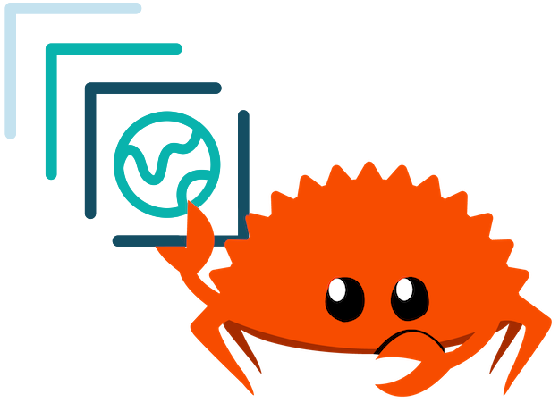

stac-rs

High-performance, reliable STAC tooling with Rust
by Pete Gadomski
A bit about STAC
Development


STAC entities

STAC usage

Why stac-rs?
- Ecosystem diversity
- Improve support for servers (developers) and consumers (data users)
- Language binding support (e.g. Python, WASM)
stac-rs crates